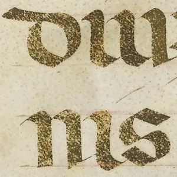

Write on the sheet. The pen is cut broad and held at an angle, and it has weight: it follows your hand in curves. Ink lands heavier where you slow and pool where you rest; the dip runs down as you write until the line breaks dry on the paper's tooth, and the pen is dipped again. Beside it, what you just wrote at four times, and a real pen line from a fifteenth-century psalter.
